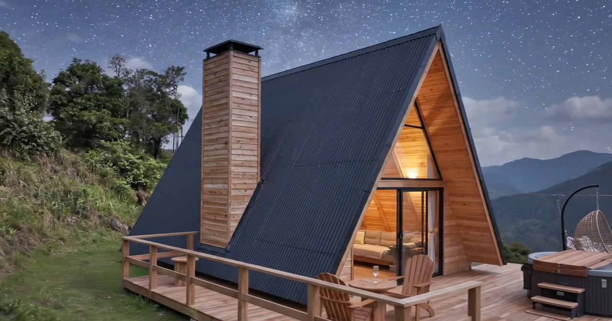
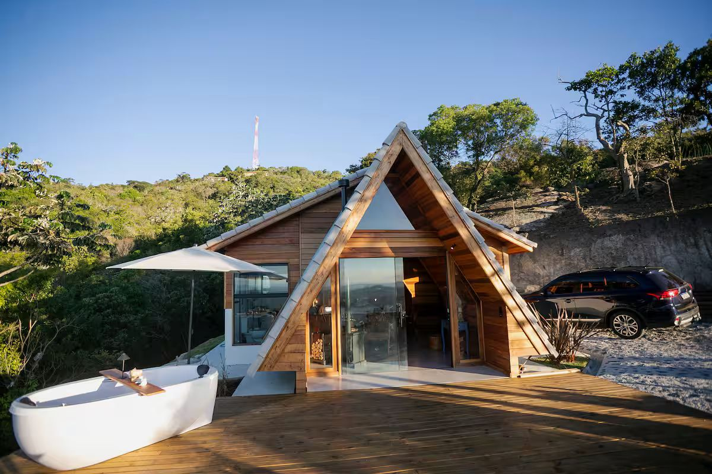
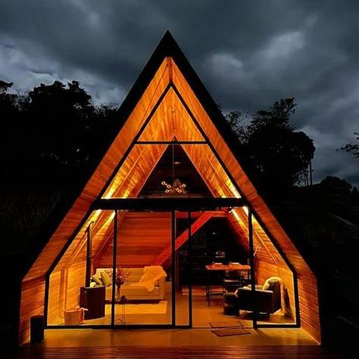
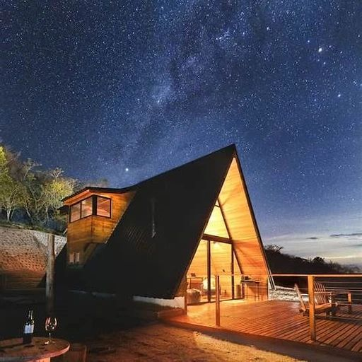
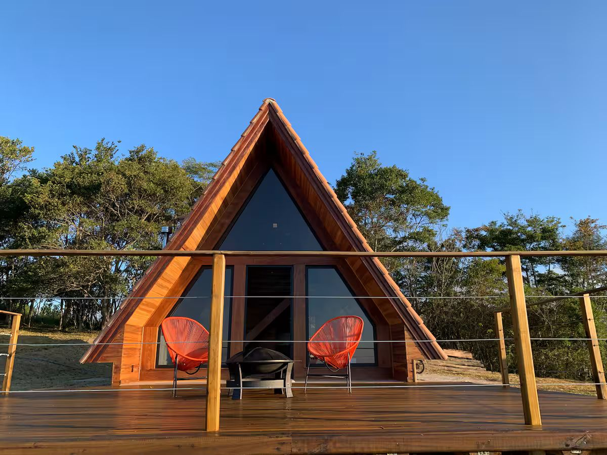

Biguá
A mais avaliada da casa.
Ar-condicionado e aquecedor, banheira para dois e um deck aberto para as estrelas.
- 2 hóspedes
- Quarto único
- Cama king

Seis cabanas A-frame no ponto mais alto do terreno, na estrada entre Cunha e Paraty, ao lado do Lavandário.
Estrada Cunha–Paraty km 55
01O lugar
As Cabanas do Alto ficam num condomínio de chácaras na estrada que liga Cunha a Paraty, a 10 km do centro e ao lado do Lavandário.
Daqui de cima, a paisagem é um mar de morros que termina na Serra da Mantiqueira. São seis cabanas em estilo A-frame, todas com cozinha, e cada uma ocupa a paisagem de um jeito: uma tem hidromassagem de frente para a serra, outra recebe quatro pessoas, outra tem uma rede suspensa olhando para a Serra do Mar.
Por isso, aqui, a primeira pergunta é: qual delas é a sua?
Ver as seis cabanas
02As seis cabanas
Todas ficam no alto e têm cozinha, deck e Wi-Fi. O que muda é quantas pessoas recebem e o que espera por você lá fora: hidromassagem, lareira, rede suspensa, o pôr do sol.
Escolha acima e as cabanas que combinam ficam em destaque.
A mais avaliada da casa.
Ar-condicionado e aquecedor, banheira para dois e um deck aberto para as estrelas.
O mar de morros, com o Lavandário ao lado.
Cama king e sofá-cama, rede, fogo de chão e um canto para trabalhar.

Hidromassagem ao ar livre, de frente para a Mantiqueira.
Lareira, mezanino com cama king, cozinha completa e churrasqueira.
A única para quatro, com o pôr do sol visto da banheira.
Dois quartos, lareira e um deck grande com redes, churrasqueira e fogo de chão.


Lareira dentro, hidromassagem lá fora.
Uma cabana para dois, com a área externa cercada de natureza e privacidade.
Rede suspensa sobre o deck, olhando para a Serra do Mar.
Banheira de imersão ao ar livre, lareira, ar-condicionado e cortina blackout.
| Item | Biguá | Pitanguá | Indaiá | Tuim | Curió | Tauá |
|---|---|---|---|---|---|---|
| Hóspedes | 2 | até 3 | até 3 | até 4 | 2 | 2 |
| Quartos | 1 | 1 | 1, no mezanino | 2 | 1 | 1 |
| Camas | King | King + sofá-cama | King + sofá-cama | King + 2 de solteiro | King | King |
| Banheira | Para dois | Não consta | Hidromassagem externa | Com vista para o pôr do sol | Hidromassagem externa | Imersão, no deck |
| Aquecimento | Aquecedor | Aquecedor | Lareira | Lareira | Lareira | Lareira |
| Ar-condicionado | Sim | Não consta | Não consta | Não consta | Não consta | Sim |
| Rede | Sim | Sim | Sim | Sim | Não consta | Suspensa e de balanço |
| Fogo de chão | Sim | Sim | Sim | Sim | Não consta | Sim |
| Churrasqueira | Não consta | Não consta | Sim | Sim | Não consta | Sim |
| Vista | Mantiqueira | Vale e Mantiqueira | Mantiqueira | Mar de morros e pôr do sol | Mantiqueira e pôr do sol | Serra do Mar e Bocaina |
não consta no anúncio da cabana. Na dúvida, pergunte pelo WhatsApp.

Quando o sol baixa sobre o mar de morros, ninguém quer sair do deck.
O deck no fim da tarde, com braseiro e cadeiras.
03Experiências
Extras que a hospedagem organiza com parceiros da região. São contratados à parte, depois da reserva, e dependem de disponibilidade.
Perguntar sobre experiênciasUma florista parceira decora a cabana conforme a ocasião: aniversário, pedido de casamento, lua de mel ou só a vontade de chegar e encontrar flores.
A hospedagem indica massoterapeutas da região para uma sessão durante a estadia.
O café não está incluído na diária, mas pode ser encomendado com antecedência para começar o dia sem sair da cabana.
Sessões com terapeutas parceiros da região, durante a estadia.
Cunha é conhecida pela cerâmica de alta temperatura. Pergunte pela possibilidade de uma oficina durante a viagem.
04Quem já foi
Os números completos e atualizados estão em cada anúncio. Ver também no Google
05Viver Cunha
Cunha é estância climática, a cerca de 950 metros de altitude, conhecida pela cerâmica de alta temperatura e pelas noites frias de inverno. As cabanas ficam na estrada que desce a serra até Paraty, o que deixa boa parte da região a poucos quilômetros.
06Imagens
07Reserva direta
Os valores mudam conforme a cabana, o dia da semana e os feriados, por isso a consulta é feita para as suas datas.
Prefere conversar antes? WhatsApp (12) 99102-2087
Na Estrada Cunha–Paraty (SP-171), km 55, em Cunha (SP), dentro de um condomínio de chácaras. Ficam a cerca de 10 km do centro de Cunha, ao lado do Lavandário, e a cerca de 40 km de Paraty.
São seis cabanas em estilo A-frame. Biguá, Curió e Tauá recebem 2 hóspedes; Pitanguá e Indaiá, até 3; a Tuim, com dois quartos, recebe até 4.
Indaiá e Curió têm hidromassagem na área externa; a Tauá tem banheira de imersão no deck; a Tuim tem banheira com vista para o pôr do sol; e a Biguá tem banheira para dois.
Biguá, Curió e Tauá são feitas para dois. A Biguá tem ar-condicionado e é a mais avaliada; a Curió combina lareira e hidromassagem externa; a Tauá tem rede suspensa e vista para a Serra do Mar. Indaiá e Pitanguá também funcionam bem para casais.
Todas as cabanas têm cozinha. O café da manhã não está incluído na diária, mas é possível encomendar uma cesta de café como serviço adicional.
Cunha é estância climática, a cerca de 950 m de altitude, e as noites de inverno podem chegar perto de 0 °C. Indaiá, Tuim, Curió e Tauá têm lareira; Biguá e Pitanguá têm aquecedor. Biguá e Tauá também têm ar-condicionado.
Sim, pets são aceitos mediante consulta prévia, e pode haver taxa adicional. Avise ao consultar as datas.
O check-in é autônomo, com senha, a partir das 14h; o check-out é até as 12h. Os detalhes de acesso são enviados depois da reserva.
Sim. Há estacionamento junto às cabanas, sem custo adicional, e Wi-Fi.
Não. Segundo a hospedagem, o acesso é todo pavimentado e pode ser feito com qualquer carro ou moto.
Há restaurantes e cafés na região, inclusive o café do Lavandário, ao lado. Como as cabanas têm cozinha, a recomendação é chegar no horário de funcionamento dos restaurantes ou levar mantimentos.
Decoração com flores, massagem e cesta de café da manhã, além de terapias e oficina de cerâmica sob consulta. Todas são contratadas à parte, depois da reserva, e dependem de disponibilidade.
Escolha a cabana e as datas no formulário de reserva deste site: ele abre o WhatsApp da hospedagem com a mensagem pronta. A equipe responde com disponibilidade e valores para as suas datas, e a reserva é feita diretamente com as Cabanas do Alto.
De São Paulo são cerca de 230 km, de 2h30 a 3h, pela Via Dutra até Guaratinguetá e depois pela SP-171. Do Rio de Janeiro, cerca de 3h30 pelo mesmo caminho.
A serra fica a cerca de três horas de São Paulo. A sua cabana, a uma mensagem.